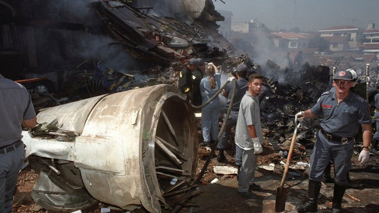

TAM Transportes Aereos Regionais Flight 402 (76) (77)
The TAM Transportes Aereos Regionais Flight 402 went from Congonhas-Sao Paulo International Airport to an airport in Rio de Janeiro. On 31 October 1996, the plane crashed in a residential area, killing 99 people (95 people on board and 4 people on the ground).
"After the departure on 8.27 am, the starboard engine of the airplane operating the route reversed thrust while the aircraft was climbing away from the runway at Congonhas." The plane had begun to tilt to the right and then after some useless attempts made by the pilot, it tilted to 90 degrees with the front pointed on the ground.
The aircraft lifted off the runway with full power,but a software problem or a possible short circuit activated the thrust reversal (provides deceleration, used to land on the runway) and created an imbalance of power that caused the rotation to the right of the airplane, and it's crash.
During the investigation it was discovered also that the crew was not prepared for this kind of failure, in fact Fokker (the aircraft manufacturer) has decided not to train the crew because the possibility of this failure was very unlikely.